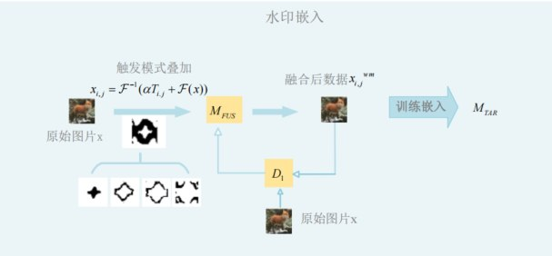
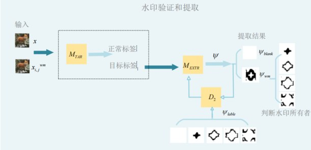
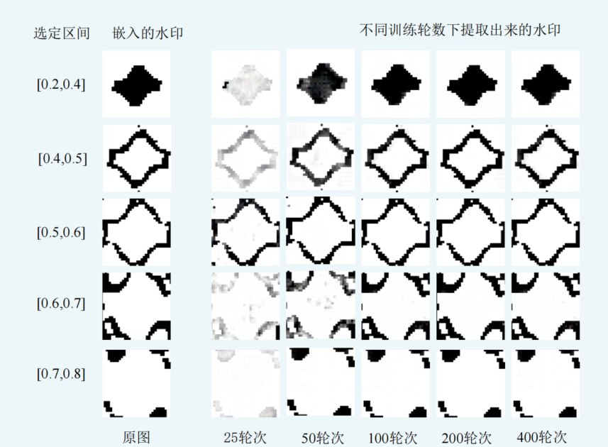
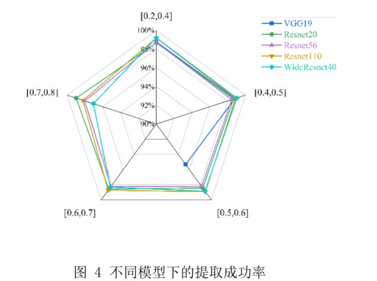
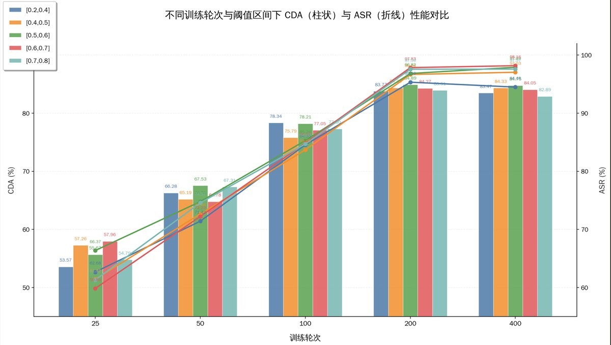
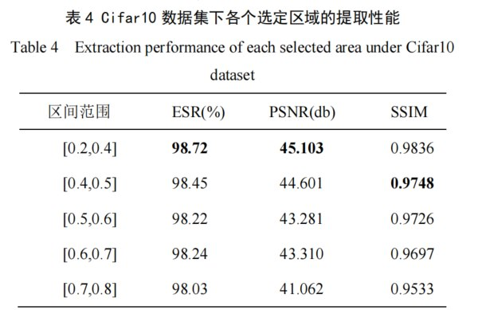

基于编码器-解码器的深度模型水印信息嵌入与提取方案
研究背景
针对深度学习模型版权保护难题，面向深度神经网络模型的知识产权溯源场景，开展模型水印隐写方案研究。传统水印嵌入方式存在三大挑战：易破坏模型原有精度、水印提取抗攻击能力弱、嵌入—提取流程不对称难以部署。
方案设计
核心采用对称融合与提取网络：两个网络均采用 U-Net 对称结构，利用跳跃连接保留图像高频细节，实现水印的无痕嵌入与视觉保真。整体流程分为三阶段：
将原始数据集（CIFAR-10）执行傅里叶变换映射至频域，通过叠加触发模式生成初步水印载体，再经 U-Net 融合网络无痕嵌入。
5 个目标模型协同训练；嵌入端用判别器 D1 监督融合网络，逼迫水印藏得更深；提取端用判别器 D2 监督对称 U-Net 提取网络，防止网络"瞎猜"（解决水印幻觉）。
对抗提取 + 验证优化，从含水印模型中还原水印信息并完成版权校验。


个人核心贡献
负责提取网络训练以及判别器设计。在损失函数设计中，于 L_EXTR = L_wm + λ₂·L_orig 基础上补充了 L_orig 损失项，避免提取网络产生"幻觉"——即使输入干净图片，也不会强行"脑补"出水印。
核心创新：利用 FFT 将空域转化为频域后，基于 ResNet56 模型的傅里叶误差热力图分析，将频域划分为 0.2–0.8 内的 5 个独立区间，针对不同频段叠加不同触发模式发给不同用户，既实现多用户版权分发，又天然抵御"共谋攻击"。

实验结果
在 VGG19、ResNet20、ResNet56、ResNet110、WideResNet40 五个经典网络上进行 CIFAR-10 基准测试，核心指标 ESR 均在 98% 以上，迁移有效。区间消融显示低频段 [0.2, 0.4] 的 ESR 达 98.72%，提取质量高于高频段；训练轮次设定为 200 轮（此时 CDA 达到最大值，兼顾目标模型原有能力）。


